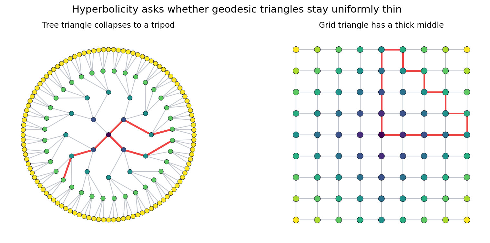
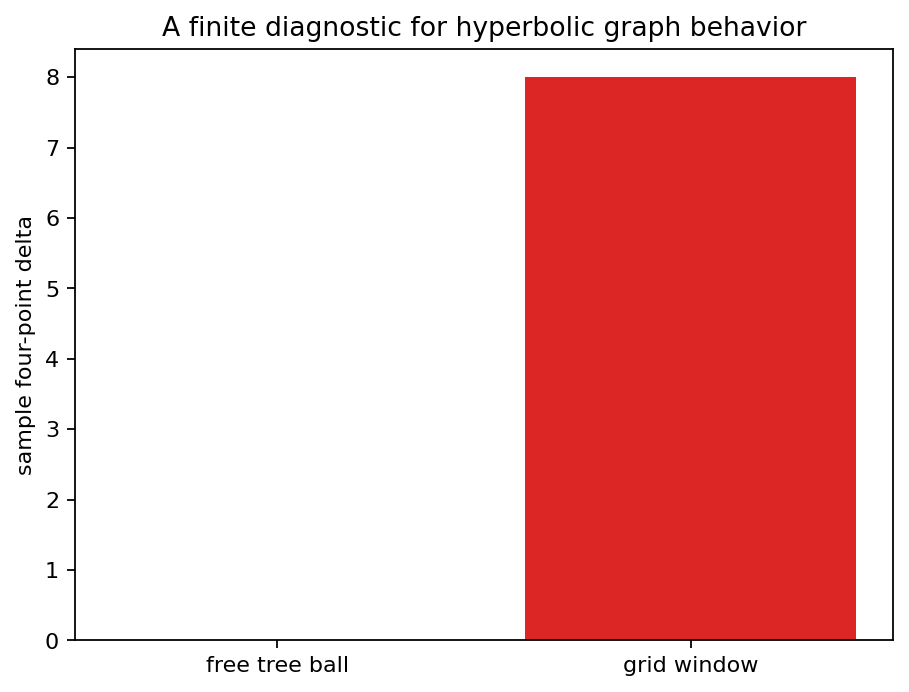

Chapter 07 turns negative curvature into a graph condition: geodesic triangles must be uniformly thin.
Source grounding. Notebook: Geometric-Group-Theory-An-Introduction/part-03-geometry-of-groups/chapter-07-hyperbolic-groups/07-hyperbolic-groups.ipynb.
Source span: printed pages 203-256; PDF pages 214-267. Source PDF: Geometric-Group-Theory-An-Introduction/Geometric Group Theory An Introduction.pdf.
Curvature usually suggests infinitesimal comparison: tangent planes, Jacobi fields, or local angle excess.
A Cayley graph only gives vertices, edges, and shortest-path distance. The usable question becomes: how do geodesic triangles behave?
Model for free groups: triangles collapse to tripods.
Obstruction pattern: grid windows produce thick triangles.
Not the definition for groups, but useful geometric memory.
A geodesic triangle is delta-thin if each side lies inside the delta-neighborhood of the union of the other two sides.
Hyperbolic space. One constant \(\delta\) works for all geodesic triangles in the metric space.

highlighted tree triangle edges
highlighted grid triangle edges
| Model | Sampled delta | Meaning |
|---|---|---|
| free tree | 0.0 | tripod behavior |
| grid window | 8.0 | visible thickening |
The diagnostic is finite-window evidence. The definition still quantifies over all geodesic triangles.

Free group model. Reduced words branch without creating cycles, so the Cayley graph is a tree and every geodesic triangle is a tripod.
A finitely generated group is hyperbolic when one, equivalently every, Cayley graph for a finite generating set is a hyperbolic metric space.
Reason this matters. The property belongs to the group, not to a decorative choice of generators or layout.
In a hyperbolic space, a quasi-geodesic segment with fixed constants remains within a bounded distance of the genuine geodesic between its endpoints.
Thin triangles prevent efficient paths from drifting through large flat regions, because those regions would create many widely separated near-geodesics.
A word equal to the identity is a loop in the Cayley graph. Hyperbolicity gives bounded local evidence when the loop is not geodesic.
With a suitable finite presentation, a long boundary arc of a relator can be replaced by a shorter complementary arc until the word vanishes or no rule applies.
If \(g\) has infinite order, the sequence \(\ldots,g^{-1},e,g,g^2,\ldots\) gives a quasi-geodesic line in the Cayley graph.
The two directions of this axis become attracting and repelling ideal endpoints in the boundary picture.
If \(h g = g h\), then \(h\) coarsely sends the \(g\)-axis to itself. Hyperbolicity leaves little room to shear away from that axis.
In \(\mathbb{Z}^2\), many independent translations commute because there is a whole plane of parallel axes. Hyperbolicity collapses that freedom to a narrow corridor.
Products of infinite groups often contain quasi-isometric grid regions. Those grids support triangles whose thickness grows with scale.
The obstruction is geometric: a large rectangle gives many nearly efficient routes that stay far apart.
Two geodesic rays define the same boundary point when they remain within bounded distance of one another.
free tree delta in the saved check
grid window delta in the saved check